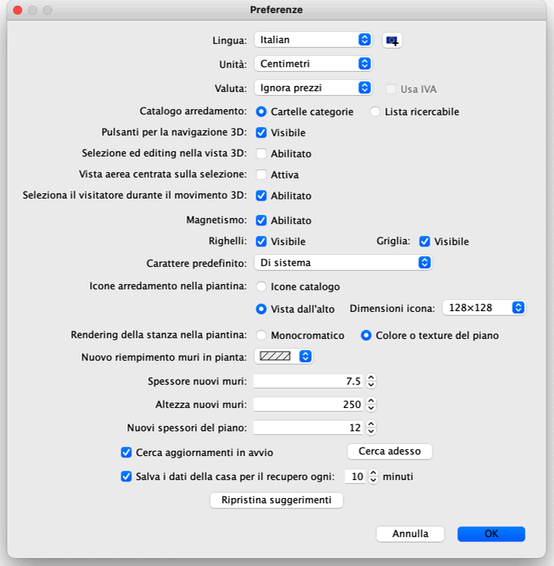

|
|
Modificare le preferenze | ||
|
Per modificare le preferenze di Sweet Home 3D, scegli Sweet Home 3D > Preferenze... sotto Mac OS X oppure File > Preferenze... sotto altri sistemi operativi.  Nel pannello preferenze, puoi scegliere la Lingua utilizzata per l'interfaccia utente di Sweet Home 3D e l'Unità di misura usata per disegnare i righelli e la griglia della piantina della casa, e per visualizzare lunghezze e aree.
La casella di selezione Magnetismo abilita o disabilita il magnetismo usato
nella piantina della casa durante il
disegno dei muri e il
posizionamento dell'arredamento. Il magnetismo può
anche essere disabilitato / abilitato con l'icona Magnete che si trova nella
barra degli strumenti di Sweet Home 3D
L'impostazione Spessore nuovi muri imposta lo spessore di tutti i muri che
saranno creati dopo che il pannello preferenze sarà chiuso. Infine il pulsante Ripristina suggerimenti ripristina le risposte date nella casella di selezione Non visualizzare nuovamente questo suggerimento nei riquadri di dialogo suggerimenti visualizzati quando fai clic su qualche strumento. Questo significa che tutti i riquadri di dialogo dove hai selezionato la casella suddetta riappariranno nuovamente.
|


|